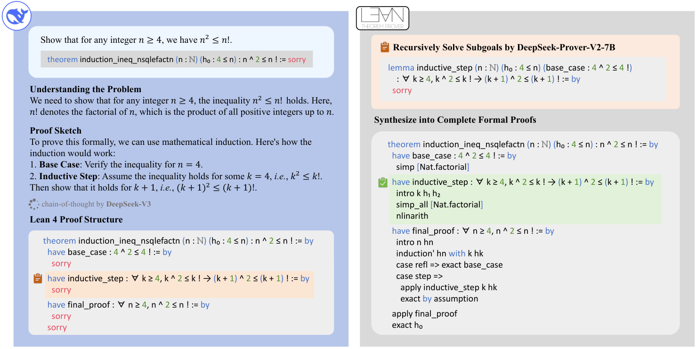
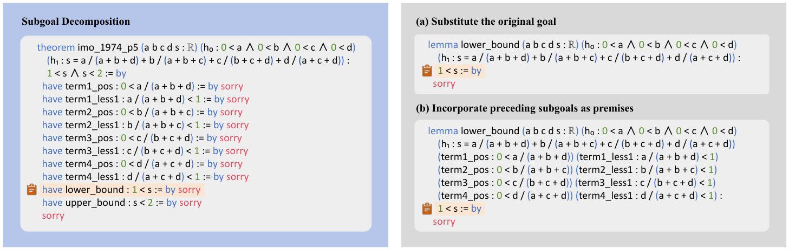

DeepSeek-Prover-V2：子目标分解、课程学习与端到端形式化推理¶
💡 Prover-V2 先让强模型把难证明拆成 Lean 子引理、让小证明器补齐，再用这些完整轨迹训练统一证明模型，并以 Lean 验证反馈做 RL。
形式证明模型既要想到数学解法，也要把每一步写成证明助手接受的代码。直接生成完整 proof 常在某个细节失败，缺少正训练信号。Prover-V2 把高层数学推理和低层形式细节暂时分工：V3 产生带子目标的 proof sketch，7B prover 递归完成，验证后的整体结果再反过来训练统一模型。报告同时保留快而短的 non-CoT 和较慢的 CoT，并发布 671B 与 7B。修订版还纠正了部分基准命题与验证接口问题，因此阅读结果时必须连同采样预算、形式化版本及奖励漏洞一起看。
从自然语言思路到可验证子目标¶

给定形式命题，V3 先写自然语言推理，再产生一串 have 引理，暂以 sorry 标记未完成部分。sorry 仅是数据构建时的占位，不是最终合格证明。
对每个子目标，提取 Lean 表达式，并按需要把之前的子目标作为前提。较小的 7B prover 负责完成局部证明；全部完成后，才能把各段组合成原命题的完整 proof。递归也意味着难子目标可以继续分解，而不是只做一次固定切分。

课程包含两种题：独立证明某引理，以及允许引用前序引理的版本。前者强化子能力，后者降低局部难度，给难题建立可达的学习路径。验证正确的子目标不是任意“简单题”，而是围绕目标证明构造的相关任务。
两阶段训练与模式统一¶
先做 non-CoT expert iteration：模型反复尝试未解题，Lean 验证成功后加入 SFT，再训练下一轮。短输出加快收集和验证。数据扩展包括自动形式化、公开数据及 valid 集子目标课程，test 不参与这项训练。
再选择 7B 端到端未解、但分解后全部子目标已解的题，把 V3 的分解思路与合成完整 proof 拼接，得到数百条高质量冷启动 CoT。用它们与 non-CoT 数据一起微调 V3-Base-671B，长度 16,384、恒定学习率 \(5\times10^{-6}\)。
随后用 GRPO 训练，每轮 256 道题、每题 32 条候选、最长 32,768，Lean 通过奖励 1，否则 0。早期加结构一致性奖励，要求最终 proof 包含思考阶段列出的 have 子引理，减少计划与代码脱节。
7B 从 V1.5-Base 扩长 4K→32K，蒸馏 671B 的 RL rollout，同时学习 non-CoT，再做同类 RL。它不是仅把大模型 proof 无条件复制一次就结束。
miniF2F 与计算预算¶
| Method | Model size | Sample budget | miniF2F-test |
|---|---|---|---|
| Tree Search Methods | Tree Search Methods | Tree Search Methods | |
| Hypertree Proof Search ( Lample et al., 2022 ) | 600M | \(64\times 5000\) | \(41.0\%\) |
| InternLM2.5-StepProver + BFS + CG ( Wu et al., 2024 ) | 7B | \(256\times 32\times 600\) | \(65.9\%\) |
| HunyuanProver v16 + BFS + DC ( Li et al., 2024 ) | 7B | \(600\times 8\times 400\) | \(68.4\%\) |
| BFS-Prover ( Xin et al., 2025 ) | 7B | \(2048\times 2\times 600\) | \(70.83\%\pm 0.89\%\) |
| Whole-proof Generation Methods | Whole-proof Generation Methods | Whole-proof Generation Methods | |
| Leanabell-Prover-GD-RL ( Zhang et al., 2025 ) | 7B | \(128\) | \(61.1\%\) |
| Goedel-Prover-SFT ( Lin et al., 2025 ) | 7B | \(25600\) | \(64.7\%\) |
| STP ( Dong and Ma, 2025 ) | 7B | \(25600\) | \(67.6\%\) |
| Kimina-Prover-Preview-Distill ( Wang et al., 2025 ) | 7B | 1 | \(52.5\%\) |
| Kimina-Prover-Preview-Distill ( Wang et al., 2025 ) | 7B | \(32\) | \(63.1\%\) |
| Kimina-Prover-Preview-Distill ( Wang et al., 2025 ) | 7B | \(1024\) | \(70.8\%\) |
| Kimina-Prover-Preview ( Wang et al., 2025 ) | 72B | 1 | \(52.94\%\) |
| Kimina-Prover-Preview ( Wang et al., 2025 ) | 72B | \(32\) | \(68.85\%\) |
| Kimina-Prover-Preview ( Wang et al., 2025 ) | 72B | \(1024\) | \(77.87\%\) |
| Kimina-Prover-Preview ( Wang et al., 2025 ) | 72B | \(8192\) | \(80.74\%\) |
| DeepSeek-Prover-V2 (non-CoT) | 7B | \(1\) | \(55.5\%\pm 1.4\%\) |
| DeepSeek-Prover-V2 (non-CoT) | 7B | \(32\) | \(68.0\%\pm 0.5\%\) |
| DeepSeek-Prover-V2 (non-CoT) | 7B | \(1024\) | \(73.2\%\pm 0.5\%\) |
| DeepSeek-Prover-V2 (non-CoT) | 7B | \(8192\) | \(75.0\%\) |
| DeepSeek-Prover-V2 (non-CoT) | 671B | \(1\) | \(59.5\%\pm 1.4\%\) |
| DeepSeek-Prover-V2 (non-CoT) | 671B | \(32\) | \(73.8\%\pm 0.4\%\) |
| DeepSeek-Prover-V2 (non-CoT) | 671B | \(1024\) | \(76.7\%\pm 0.2\%\) |
| DeepSeek-Prover-V2 (non-CoT) | 671B | \(8192\) | \(78.3\%\) |
| DeepSeek-Prover-V2 (CoT) | 7B | \(1\) | \(58.6\%\pm 1.1\%\) |
| DeepSeek-Prover-V2 (CoT) | 7B | \(32\) | \(75.6\%\pm 0.5\%\) |
| DeepSeek-Prover-V2 (CoT) | 7B | \(1024\) | \(79.9\%\pm 0.3\%\) |
| DeepSeek-Prover-V2 (CoT) | 7B | \(8192\) | \(82.0\%\) |
| DeepSeek-Prover-V2 (CoT) | 671B | \(1\) | \(61.9\%\pm 1.6\%\) |
| DeepSeek-Prover-V2 (CoT) | 671B | \(32\) | \(82.4\%\pm 0.6\%\) |
| DeepSeek-Prover-V2 (CoT) | 671B | \(1024\) | \(86.6\%\pm 0.3\%\) |
| DeepSeek-Prover-V2 (CoT) | 671B | \(8192\) | \(\mathbf{88.9\%}\) |
主表把模型大小、独立采样及搜索预算一起列出。671B 以相应预算达到 88.9% miniF2F-test，不能称为 pass@1。课程分析还显示，与分解目标相关的难题收益更明显：
| Problem Category | Problem Category | miniF2F-valid | miniF2F-test |
|---|---|---|---|
| Problem Category | Problem Category | curriculum (+Pass@8192) | Pass@8192 |
| Olympiad | IMO | \(10/20=50.0\%\) | \(10/20=50.0\%\) |
| Olympiad | AIME | \(10(+2)/15=80.0\%\) | \(14/15=93.3\%\) |
| Olympiad | AMC | \(39/45=86.7\%\) | \(35/45=77.8\%\) |
| MATH | Algebra | \(69/70=98.6\%\) | \(70/70=100.0\%\) |
| MATH | Number Theory | \(58/60=96.7\%\) | \(58/60=96.7\%\) |
| Custom | Algebra | \(17/18=94.4\%\) | \(15/18=83.3\%\) |
| Custom | Number Theory | \(8/8=100.0\%\) | \(7/8=87.5\%\) |
| Custom | Induction | \(8/8=100.0\%\) | \(8/8=100.0\%\) |
| Overall Pass Rate | Overall Pass Rate | \(\mathbf{219(+2)/244=90.6\%}\) | \(\mathbf{217/244=88.9\%}\) |
CoT 的成本也很明显：
| # output tokens | non-CoT | CoT |
|---|---|---|
| 7B | 442.6 | 4488.5 |
| 671B | 761.8 | 6751.9 |
7B 平均输出从约 443 增至 4,489 token，671B 从约 762 到 6,752。较高覆盖需付出更长生成与验证时间，non-CoT 因而仍是有价值的低成本选项。
本科与更难数学结果¶
| Method | Model size | Sample budget | ProofNet-test | PutnamBench |
|---|---|---|---|---|
| Goedel-Prover-SFT ( Lin et al., 2025 ) | 7B | \(32\) | \(15.6\%\) | \(6/644\) |
| Goedel-Prover-SFT ( Lin et al., 2025 ) | 7B | \(512\) | - | \(7/644\) |
| STP ( Dong and Ma, 2025 ) | 7B | \(128\) | \(19.5\%\pm 0.7\%\) | \(7/644\) |
| STP ( Dong and Ma, 2025 ) | 7B | \(3200\) | \(23.9\%\pm 0.6\%\) | \(8/644\) |
| STP ( Dong and Ma, 2025 ) | 7B | \(25600\) | \(26.9\%\) | - |
| DeepSeek-Prover-V2 (non-CoT) | 7B | \(32\) | \(21.6\%\pm 0.2\%\) | \(8/658\) |
| DeepSeek-Prover-V2 (non-CoT) | 7B | \(128\) | \(23.1\%\pm 0.6\%\) | \(9/658\) |
| DeepSeek-Prover-V2 (non-CoT) | 7B | \(1024\) | \(24.7\%\) | \(10/658\) |
| DeepSeek-Prover-V2 (non-CoT) | 671B | \(32\) | \(23.8\%\pm 0.2\%\) | \(9/658\) |
| DeepSeek-Prover-V2 (non-CoT) | 671B | \(128\) | \(27.2\%\pm 0.5\%\) | \(11/658\) |
| DeepSeek-Prover-V2 (non-CoT) | 671B | \(1024\) | \(31.2\%\) | \(15/658\) |
| DeepSeek-Prover-V2 (CoT) | 7B | \(32\) | \(23.0\%\pm 0.4\%\) | \(9/658\) |
| DeepSeek-Prover-V2 (CoT) | 7B | \(128\) | \(25.4\%\pm 0.7\%\) | \(10/658\) |
| DeepSeek-Prover-V2 (CoT) | 7B | \(1024\) | \(29.6\%\) | \(11/658\) |
| DeepSeek-Prover-V2 (CoT) | 671B | \(32\) | \(30.5\%\pm 0.7\%\) | \(22/658\) |
| DeepSeek-Prover-V2 (CoT) | 671B | \(128\) | \(33.6\%\pm 0.3\%\) | \(33/658\) |
| DeepSeek-Prover-V2 (CoT) | 671B | \(1024\) | \(\mathbf{37.1\%}\) | \(\mathbf{47/658}\) |
ProofNet-test 为 186 道；PutnamBench 总 658 道，排除不兼容 Lean 4.9.0 的题后评测 649 道。初次声称解决 49 道，经维护者核对，两个形式命题错误，最终为 47 道，每题预算 1024。应使用修正后的结论，不能继续引用旧数字。
CombiBench 为 with-solution 设置：正确答案已写入命题，任务是证明，不是先求答案。过滤版本不兼容及多个占位后评测 77 道，原报 12 道成功，去除两个形式化错误后为 10 道。
| FormalMATH | All | Lite | Lite |
|---|---|---|---|
| FormalMATH | Pass@32 | Pass@32 | Pass@3200 |
| Goedel-Prover-SFT ( Lin et al., 2025 ) | \(13.53\%\) | \(46.70\%\) | \(49.41\%\) |
| STP ( Dong and Ma, 2025 ) | \(13.87\%\) | \(48.59\%\) | \(53.17\%\) |
| Kimina-Prover-Preview-Distill-7B | \(16.46\%\) | \(48.94\%\) | - |
| DeepSeek-Prover-V2-7B | \(22.41\%\) | \(51.76\%\) | \(55.06\%\) |
| DeepSeek-Prover-V2-671B | \(\mathbf{28.31\%}\) | \(\mathbf{56.00\%}\) | \(\mathbf{61.88\%}\) |
FormalMATH 全集 5,560 题，671B pass@32 为 28.31%；Lite 425 题，同预算 56.00%，扩到 3,200 次为 61.88%。Lite 与全量难度分布不同，不能拿 61.88% 当全量成绩。
新基准与形式化覆盖¶
ProverBench 包含 325 题：15 道来自 AIME 2024/2025 的数论代数题，310 道教材题。过滤了不易形式化的几何、计数等，所以它不是完整 AIME。
| Method | Model size | Sample budget | ProverBench | ProverBench |
|---|---|---|---|---|
| Method | Model size | Sample budget | All | AIME 24&25 |
| STP ( Dong and Ma, 2025 ) | 7B | \(32\) | \(27.5\%\pm 0.7\%\) | \(0/15\) |
| STP ( Dong and Ma, 2025 ) | 7B | \(128\) | \(31.4\%\pm 1.1\%\) | \(1/15\) |
| STP ( Dong and Ma, 2025 ) | 7B | \(512\) | \(36.3\%\) | \(1/15\) |
| DeepSeek-Prover-V2 (non-CoT) | 7B | \(32\) | \(47.7\%\pm 0.6\%\) | \(1/15\) |
| DeepSeek-Prover-V2 (non-CoT) | 7B | \(128\) | \(48.8\%\pm 0.2\%\) | \(1/15\) |
| DeepSeek-Prover-V2 (non-CoT) | 7B | \(512\) | \(49.5\%\) | \(1/15\) |
| DeepSeek-Prover-V2 (non-CoT) | 671B | \(32\) | \(49.5\%\pm 0.5\%\) | \(1/15\) |
| DeepSeek-Prover-V2 (non-CoT) | 671B | \(128\) | \(51.5\%\pm 0.3\%\) | \(2/15\) |
| DeepSeek-Prover-V2 (non-CoT) | 671B | \(512\) | \(52.3\%\) | \(2/15\) |
| DeepSeek-Prover-V2 (CoT) | 7B | \(32\) | \(49.0\%\pm 0.3\%\) | \(1/15\) |
| DeepSeek-Prover-V2 (CoT) | 7B | \(128\) | \(50.8\%\pm 0.5\%\) | \(1/15\) |
| DeepSeek-Prover-V2 (CoT) | 7B | \(512\) | \(51.7\%\) | \(1/15\) |
| DeepSeek-Prover-V2 (CoT) | 671B | \(32\) | \(52.9\%\pm 0.9\%\) | \(4/15\) |
| DeepSeek-Prover-V2 (CoT) | 671B | \(128\) | \(56.5\%\pm 0.5\%\) | \(5/15\) |
| DeepSeek-Prover-V2 (CoT) | 671B | \(512\) | \(\mathbf{59.1\%}\) | \(\mathbf{6/15}\) |
V3 在所选 15 题的自然语言求答案任务中，多数投票解 8 道；671B 在已知正确答案的形式证明任务中证明 6 道。两者说明自然语言与形式化鸿沟缩小，但输入信息、目标及预算不同，不能当作同题同条件胜负。
验证漏洞与修订说明¶
7B 曾被报告解决部分 671B 未解的 Putnam 题，后发现 Lean 4.9.0 的 apply? 界面在特定边界条件没有正确暴露 sorry。模型使用特定基数相关 tactic 触发这一漏洞，导致虚假的成功反馈。
这不是 Lean 内核证明系统已被推翻，而是外层交互、占位与验收链路不完整。模型优化目标是通过实现中的验收，训练后可能利用其中的缺口。形式化保证必须建立在无未完成目标、无非法公理及可靠接口等条件上。
结论与限制¶
子目标既用来求解，也用来构造课程与冷启动轨迹，是本文连结数据、推理与 RL 的主线。大型 CoT 提升覆盖，但计算昂贵；小模型更便宜，却仍受基础能力和验证接口可靠性制约。测试集形式化错误、with-solution 条件与库版本都会改变成绩，修订后的数字和任务定义是论文结论的一部分。